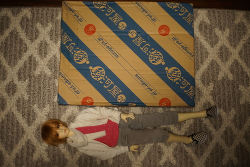
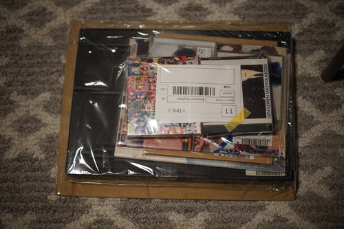
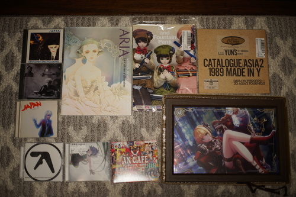

Ordered November 10th. Arrived November 13th via DHL. Total was $207.22/30,263円. The Paypal exchange rate at time of purchase was 1 USD = $146.0458 JPY. The tip has increased to 800円 from 500円 and the minimum item price has now increased to 600円 from 500円. I find that the price estimator on the Suruga-ya site is better than the actual exchange rate.
This site isn't the best option, but I keep using it because "free shipping" with a higher item price means I won't get a surprise shipping fee of 6600 yen for my 400 yen item after I have already committed to purchasing it. It's probably more expensive in the end, but I hate surprises. Do not make the mistake of thinking shipping is actually free, because the markup on these items is very high compared to their Japanese site. The best items to buy here are massive books at low prices.
I don't have Verona and I am very sad about it, so you will have to make do with Liam for scale. He is shorter than Verona, but just negligibly.
The usual Suruga-ya shrink wrapped bundle to cardboard. Didn't see any glue securing it to the box this time. Everything looks to have survived shipment just fine.
I have implemented spoilers for those such as Ryan who are getting Christmas presents from this order.
US release, Caroline Blue Plate.
I couldn't decide on an album and I already was spending a lot of money. Forgive my compilation buying sins. 30 tracks over 2 discs. It's a pretty decent spread. CD comes with a cardboard dust cover for the jewel case.
Japanese release. I chose this one over buying on Amazon for about the same price because the Japanese edition has bonus tracks. The spine only says "Quiet Life" and not Japan, so keep that in mind if you are seeking this one.
Japanese release. No bonus tracks. Surprisingly short at 38 minutes long.
Softcover, glue binding, dust jacket. The dust jacket on mine has lost a lot of red pigment. Full color. Nothing explicitly BL but lots of #nohomo, so don't buy for your mom.
Softcover, glue binding with spine text. 2 different types of brown paper for the cover sheets. Content pages are off white. 35 (probably Copic) illustrations that appear to have been in an exhibition. First 4 illustrations in color. 9 manga style illustrations with accompanying text. More pages of text at the end. No BL that I can see, but your mom will think you're a lesbian if she finds it anyway.
This is the weirdest hobby crossover doujin and I love it. He has a lot to say about fountain pens and his dolls are just fountain pen stands. Staple binding. Thank you GENSHI/Nine's Graphics for my new family heirloom.
As you can see, I have force ended my search for Japan albums. I'd still buy the first two if I saw them, but I don't think they're worth seeking out. Ryan kept telling me these guys are too niche and this was the only way I'd get them. If he's wrong, I will buy more copies and send them to my friends who Do Not Care about David Sylvian or Mick Karn.